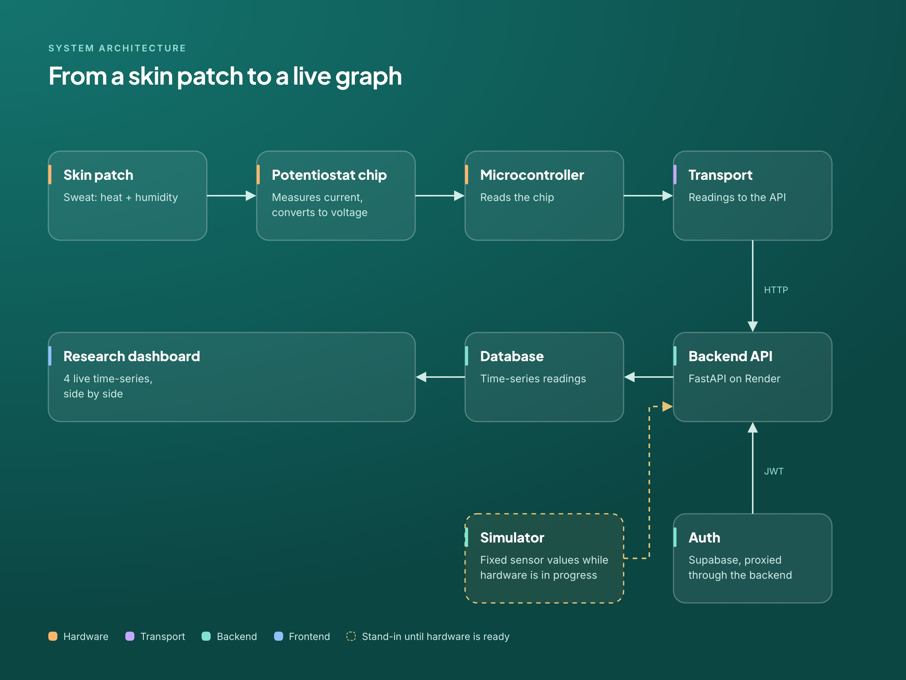
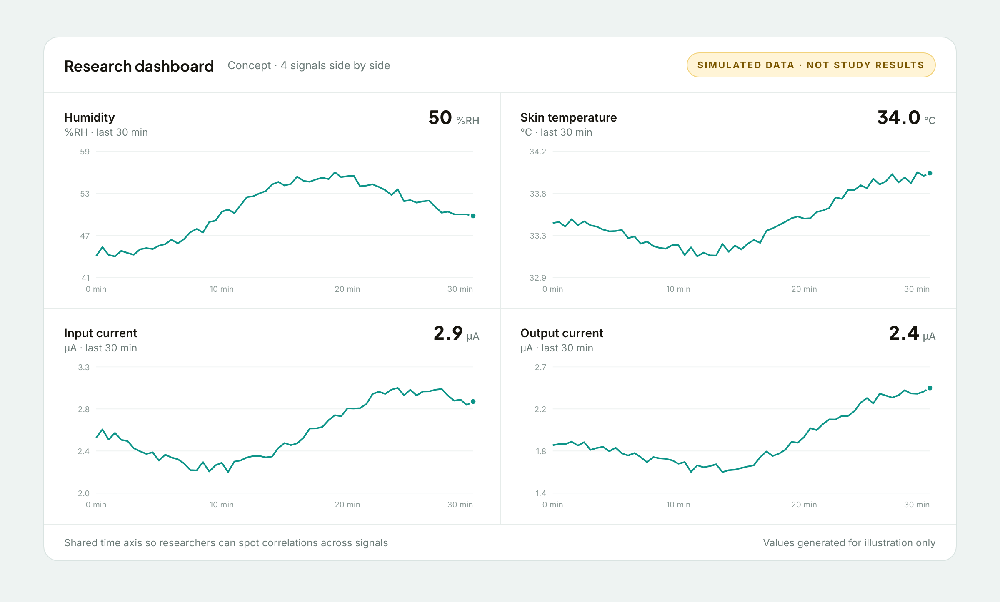
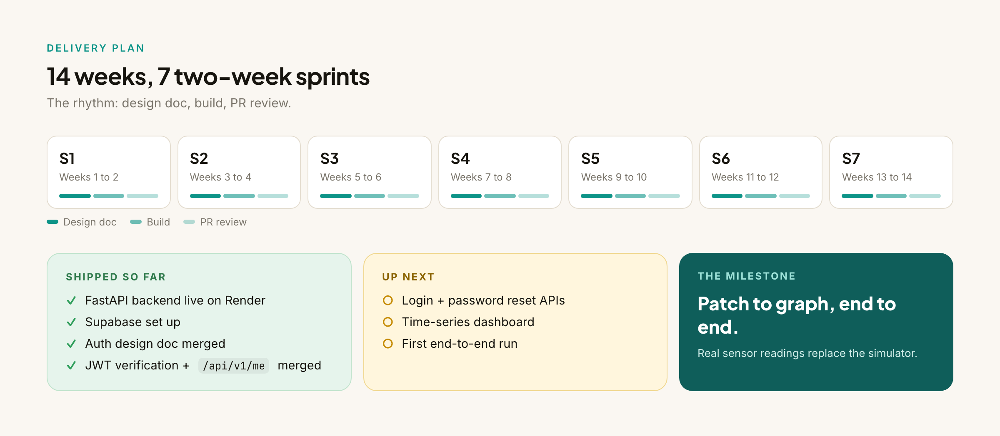

Multi-Sensor Research Platform
Can sweat tell you how much someone's had to drink? A pipeline from a skin patch to a live research dashboard.

System architecture, color-coded by who owns each piece.
01 / The Problem
The hard part isn't any one piece. It's the handoffs.
The study asks whether heat and humidity readings from sweat can predict blood alcohol level. A skin patch feeds a potentiostat chip, which measures current and converts it to voltage. From there: microcontroller, backend, database, dashboard.
Each of those hops is owned by different people: firmware, transport, backend, frontend. Hardware research projects tend to break exactly there, where one person's output becomes another person's input and nobody wrote down the shape of it.
Problem statement How do seven people across hardware and software build one pipeline, when the hardware isn't ready and the software can't wait?
02 / Research & Findings
Six realities the plan had to handle.
None of these are surprising on their own. Together, they decided the order we built things in.
Hardware isn't ready when software needs to start
Waiting on the patch would stall the backend and dashboard.
Researchers need signals side by side
The point is spotting correlations, so the four signals belong on one shared time axis.
Auth decisions ripple into the frontend
Where login lives changes what the frontend has to build and what it's trusted with.
Field use is undefined
Field use, like traffic stop screening, is still an open question.
Simulated vs real must be obvious
If fake data and real data look the same, someone will eventually mistake one for the other.
Doc review catches mistakes cheaply
Changing a design doc costs a comment. Changing merged code costs a lot more.
03 / Strategic Insights
4 principles that shaped the build.
- Simulate first, then go realUnblock software with fixed values; swap in the patch when it's ready.
- One API surface for the frontendThe frontend talks to our backend, not to five services.
- Design doc before codeAgree on the shape before anyone builds it.
- Don't design for the undefined use case yetResearch dashboard first. Field use can wait until someone defines it.
04 / The Solution
A backend-first pipeline with a dashboard at the end.
My part is the backend and auth: the layer every other sub-team plugs into. Hardware and transport push readings in; the frontend pulls them out. Everything goes through one API.
Backend API
FastAPI on Render
One versioned API the transport layer writes to and the frontend reads from.
Supabase, proxied
Backend-proxied login
The frontend never talks to Supabase directly. The backend handles it and verifies JWTs.
Research dashboard
4 time-series
Humidity, temperature, and both currents on a shared time axis.
Design decisions
Backend-proxied auth, not frontend-direct
We started with the frontend logging in to Supabase directly, then switched to backend-proxied after design review. One API surface, and auth logic stays in one place.
Fixed simulated sensor values
So software isn't blocked on hardware. The dashboard can be built and tested against known values long before the patch is ready.
Auth design shipped as its own PR
The design doc went up for review and merged before any implementation, so the team argued about the plan, not the code.


Shipped so far
- FastAPI backend live on Render
- Supabase set up
- Auth design doc merged
- JWT verification +
/api/v1/memerged
05 / Next Steps
Getting to patch-to-graph.
Login + password reset APIs
Finish the auth surface the frontend needs.
Time-series dashboard
Build the four-signal view on the shared time axis.
First end-to-end run
Real readings from the patch, all the way to a graph.